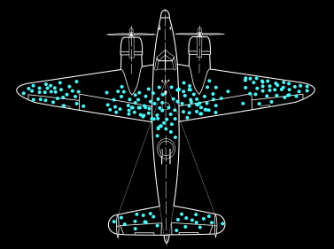

“There are three kinds of lies: lies, damned lies and statistics.”
Misleading graphics
Misleading averages
The average net worth of a SpaceX employee is at least 63 million dollars.
Explanation
- Elon Musk is a SpaceX employee.
-
Elon Musk's net worth is
636 billion dollars
according to Forbes.
-
There are roughly
10,000 SpaceX employees.
-
Assuming everyone's net worth, aside from Elon Musk's, is 0 gives us a lower bound.
-
$$636\text{B} \div 10{,}000 \simeq 63\text{ million dollars per employee}$$
The Vatican has an average of two popes per square kilometre.
Explanation
- The Vatican has an area of $0.49\text{ km}^2$.
- There is one pope in the Vatican.
- $1\text{ pope} \div 0.49\text{ km}^2 \simeq 2.04\text{ popes per km}^2$
You have an above-average number of arms.
Explanation
- Most humans have two arms.
- Some humans have fewer than two arms.
- Therefore, the arithmetic mean number of arms per person is slightly below two.
- If you have two arms, you are therefore slightly above average.
Misleading samples
8 out of 10 dentists recommend our toothpaste.
Selection bias
- Which dentists were included in the survey?
- How were they selected?
- How many dentists were asked in total?
- A sample can give a misleading result if it is not representative of the population.

Survivorship bias
- We only observe the aircraft that successfully returned from combat.
- The bullet holes show where an aircraft can be hit and still survive.
- The missing data are the aircraft that were hit elsewhere and did not return.
- Therefore, the areas with few bullet holes are the areas that should be reinforced.
No coin is fair and I can prove it.
Selective stopping
- With a small sample, random fluctuations can make a fair coin look biased.
- Keep flipping the coin until the results look sufficiently unusual.
- If you stop only when the data support your claim, the sample is no longer neutral.
- The stopping rule becomes part of the experiment and affects the conclusion.
Drinking water improves your luck at dice.
Regression to the mean
- Suppose you start drinking water immediately after an unusually bad series of dice rolls.
- Extreme results are usually followed by results closer to the average.
- Your next rolls are therefore likely to improve even if the water has no effect.
- The improvement can then be incorrectly attributed to drinking water.
Like people, data will admit to anything if you torture it long enough.
Inspired by...